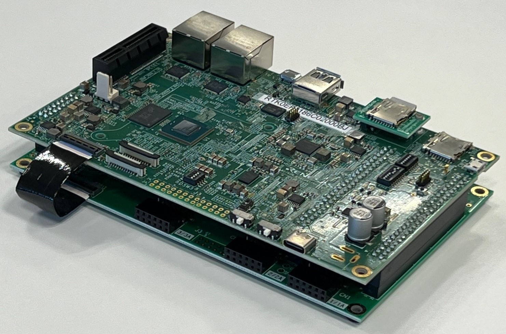
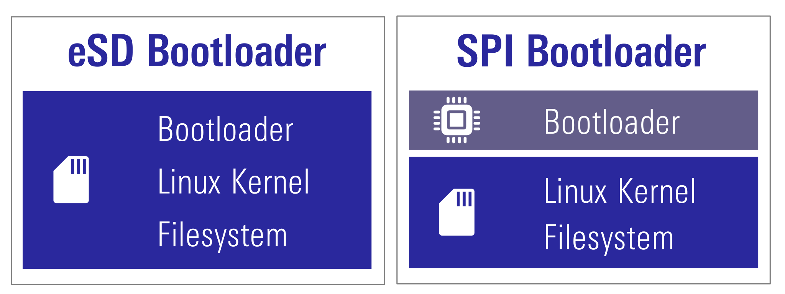
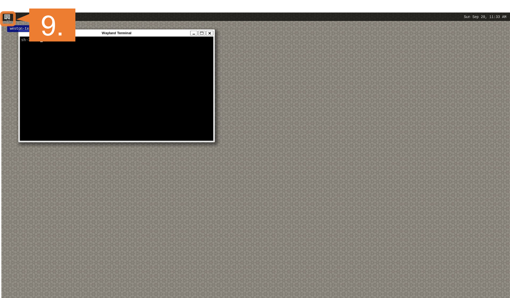

The RZ/V2N EVK is the ideal board kit for RZ/V2N evaluation.
MIPI camera module is not included in EVK.
As an input device, AI Applications support USB camera with VGA (640x480) resolution.
To use MIPI camera, please refer to e-CAM22_CURZH camera provided by e-con Systems.
e-CAM22_CURZH camera supports FHD (1920x1080) resolution.

Following items are included in the RZ/V2N EVK.
Equipment
Details
RZ/V2N Evaluation Board
Evaluation board itself.
Step 7: Deploy AI Application
This section explains how to deploy the AI Application to the RZ/V2N EVK.
To boot the board, bootloader and other Linux necessary files are required.
There are two types of bootloader available on RZ/V2N AI SDK.
eSD Bootloader: The board boots up using the bootloader written on microSD card.
xSPI Bootloader: The board boots up using the bootloader written in Flash ROM on the board.
Other necessary files, i.e. Linux kernel and root filesystem, are stored on microSD card.
You can use Linux PC to format the microSD card and expand the kernel and the root filesystem using SD card reader.

Note
Regarding the eSD (Embedded SD) booting, please note the following:
The eSD boot procedure using microSD card described in this guide is for evaluation purposes only.
If you use the eSD boot, please implement the eSD on your board according to the standard "SD Specification Part 1 eSD Addendum (version 2.10)".
The reboot command cannot be used when using the eSD boot procedure using microSD card described in this guide.
Preparation
Click the button
This step contains both eSD and xSPI Bootloader explanation.
Please click the button below to update the explanation according to your bootloader interface.
eSD BootloaderxSPI Bootloader
For eSD
eSD explanation will be shown in this style if you click "eSD Bootloader" button above.
For xSPI
xSPI explanation will be shown in this style if you click "SPI Bootloader" button above.
1. Setup RZ/V2N EVK
For eSD
microSD card needs to contain bootloaders, the Linux kernel and root filesystem to boot-up the board.
RZ/V2N AI SDK supports the WIC format for SD card image.
You can use Linux PC to write the SD card image into microSD card with SD card reader.
Note
This step is required only when starting the AI SDK or when using the new version of AI SDK.
If you have already setup the microSD card with the latest bootloader, Linux kernel, Linux device tree file and root filesystem, skip this step and proceed to the next procedure (2. Deploy Application to the Board).
For xSPI
microSD card needs to contain the Linux kernel and root filesystem to boot-up the board.
RZ/V2N AI SDK supports the WIC format for SD card image.
You can use Linux PC to write the SD card image into microSD card with SD card reader.
Bootloaders must be written in Flash ROM on the board.
You can use Windows PC to write the bootloaders on Flash ROM.
Note
This step is required only when starting the AI SDK or when using the new version of AI SDK.
If you have already setup the microSD card and the bootloader written in Flash ROM on the board, skip this step and proceed to the next procedure (2. Deploy Application to the Board).
Note
The size of WIC format SD card image is 16GB.
If you would like to expand the SD card image size, please build the RZ/V2N AI SDK Source Code according to How to Build RZ/V2N AI SDK.
Install Necessary Software
As explained in Necessary Software of Getting Started Step 2, make sure that bmap-tools is installed on Linux PC.
If you have not installed the bmap-tools, install it using following command on Host PC (Not in the docker container).
sudo apt install bmap-tools
Write the Linux files to SD card
For eSD
Run the below command to decompress ${WORK}/board_setup/eSD.zip.
cd${WORK}/board_setup
unzip eSD.zip
Following files are necessary.
They are in the ${WORK}/board_setup/eSD directory.
For xSPI
Run the below command to decompress ${WORK}/board_setup/xSPI.zip.
cd${WORK}/board_setup
unzip xSPI.zip
Following files are necessary.
They are in the ${WORK}/board_setup/xSPI directory.
File
Description
core-image-weston-rzv2n-evk.wic.bmap
SD card image
core-image-weston-rzv2n-evk.wic.gz
Follow the instruction below to prepare the microSD card.
Before inserting the microSD card to your Linux PC, open the terminal on Linux PC and run the following command to check the devices without microSD card.
lsblk
Following is the example output.
NAME MAJ:MIN RM SIZE RO TYPE MOUNTPOINT
sda 8:0 0 30.9G 0 disk
├─sda1 8:1 0 512M 0 part /boot/efi
├─sda2 8:2 0 1K 0 part
└─sda5 8:5 0 30.3G 0 part /
sr0 11:0 1 1024M 0 rom
Insert the microSD card to your Linux PC and run the following command again.
lsblk
Check the output and confirm the name appeared. This would be your microSD card device name.
Following is the example output.
NAME MAJ:MIN RM SIZE RO TYPE MOUNTPOINT
sda 8:0 0 30.9G 0 disk
├─sda1 8:1 0 512M 0 part /boot/efi
├─sda2 8:2 0 1K 0 part
└─sda5 8:5 0 30.3G 0 part /
sdb 8:16 1 29.7G 0 disk
└─sdb1 8:17 1 29.7G 0 part
sr0 11:0 1 1024M 0 rom
In this case, followings are your microSD card configuration.
/dev/sdb: The device name for the entire microSD card.
/dev/sdb1: The paritition name in microSD card. There may be multiple sdb* depending on the microSD card.
Warning
Be careful not to use the name of other device since it may destruct your computer filesystem.
To use bmaptools, microSD card partitions must be unmounted.
Run the following command to check the automatically mounted microSD card partitions.
df-h
Check the output and find the mount point, which is "/media/user/9016-4EF8" in the following example.
Filesystem Size Used Avail Use% Mounted on
:
snip
:
/dev/sdb1 15G 32K 15G 1% /media/user/9016-4EF8
Warning
Here, we use "/dev/sdb" as microSD card device name.
Unmount the automatically mounted partitions.
sudo umount /media/user/9016-4EF8
Note
If there are more than one partitions on microSD card, unmount all partitions.
Run the following command to mount the partition 2, which contains the root filesystem.
sudo mount /dev/sdb2 /mnt/sd
Warning
Change /dev/sdb to your microSD card device name.
Create the application directory on root filesystem.
sudo mkdir /mnt/sd/home/root/tvm
Note
Directory name tvm can be determined by user.
Copy the necessary files in execution environment.
Check the README.md document provided in application directory and follow the instruction in the chapter called "Application: Deploy Stage" (or similar) to deploy the application.
Note
Since RZ/V2N is a brother chip of RZ/V2H, users can use the AI Application for RZ/V2H on the RZ/V2N EVK.
Please use source code and object files for RZ/V2H, and follow the steps Application: Build Stage to build the application in the RZ/V2N AI SDK environment.
Example:
In R01_object_detection application, follow the instruction in here to find files to be copied.
Use the following command to copy the files to root filesystem.
sudo cp$WORK/ai_sdk_setup/data/<Path to target file>/<filename> /mnt/sd/home/root/tvm
Run the following command to sync the data with memory.
sync
Run the following command to unmount the partition 2.
sudo umount /mnt/sd
Eject the microSD card by running the following command and remove the microSD card from Linux PC.
sudo eject /dev/sdb
Warning
Change /dev/sdb to your microSD card device name.
Note
Use the microSD card slot SD1 on the Board as shown in the figure.
Change DSW1 and DSW2 setting as shown in the figure.
Connect the USB mouse and USB keyboard and USB camera via USB hub.
Note
There are USB 2.0 port and USB 3.0 port on RZ/V2N EVK.
Please connect your USB camera to appropriate port according to its requirement.
Here, USB camera is connected to USB 3.0 via USB hub.
After the boot-up, following screen will be displayed on HDMI monitor.
Click the icon at the top-left corner to open the terminal.

For xSPI
Note
After bootloader is written and U-boot setting is changed, terminal emulator is no longer needed.
Users can detach the serial port connection.
Insert the microSD card to the Board.
Note
Use the microSD card slot SD2 on the Board as shown in the figure.
Change DSW1 and DSW2 setting as shown in the figure.
Connect the USB mouse and USB keyboard and USB camera via USB hub.
Note
There are USB 2.0 port and USB 3.0 port on RZ/V2N EVK.
Please connect your USB camera to appropriate port according to its requirement.
Here, USB camera is connected to USB 3.0 via USB hub.
Follow the instructions explained in the document (README.md) of applications on GitHub.
Example:
For R01_object_detection application, follow the instruction here to run the application.
Users can use the AI Application for RZ/V2H on the RZ/V2N EVK.
Please use source code and object files for RZ/V2H, and follow the steps Application: Build Stage to build the application in the RZ/V2N AI SDK environment.
If you have successfully run the application, you will see following window on HDMI screen.


{kind=link}
{kind=link}